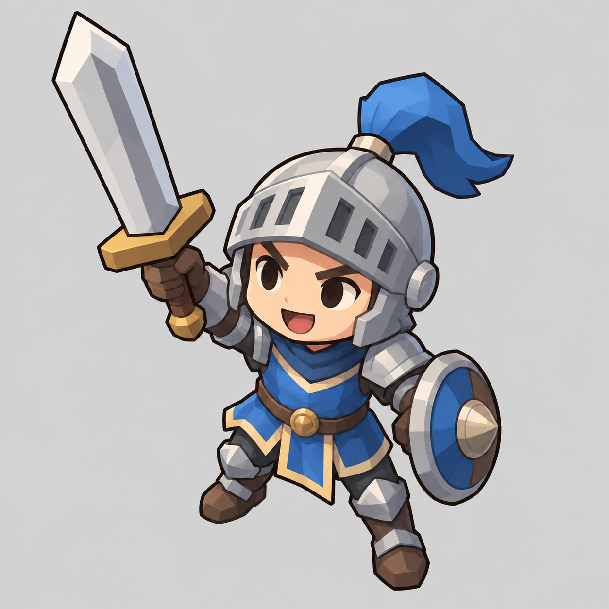
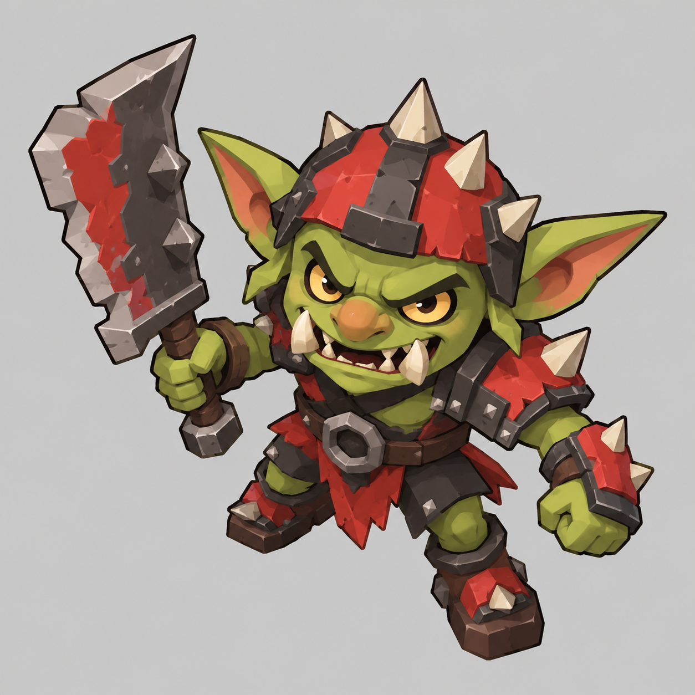

Ink March · Concept Review
Two pilot concepts for art-direction approval. Original generated images; plain grey backgrounds. Review the silhouettes at game size before building the next models.

Swordsman

Goblin
Check: Can you distinguish ally vs. enemy immediately? Are the sword, buckler, ears and cleaver still recognizable at 48 px? Are the face and armor too detailed for the intended 3D models? These are concepts, not finished GLB assets.